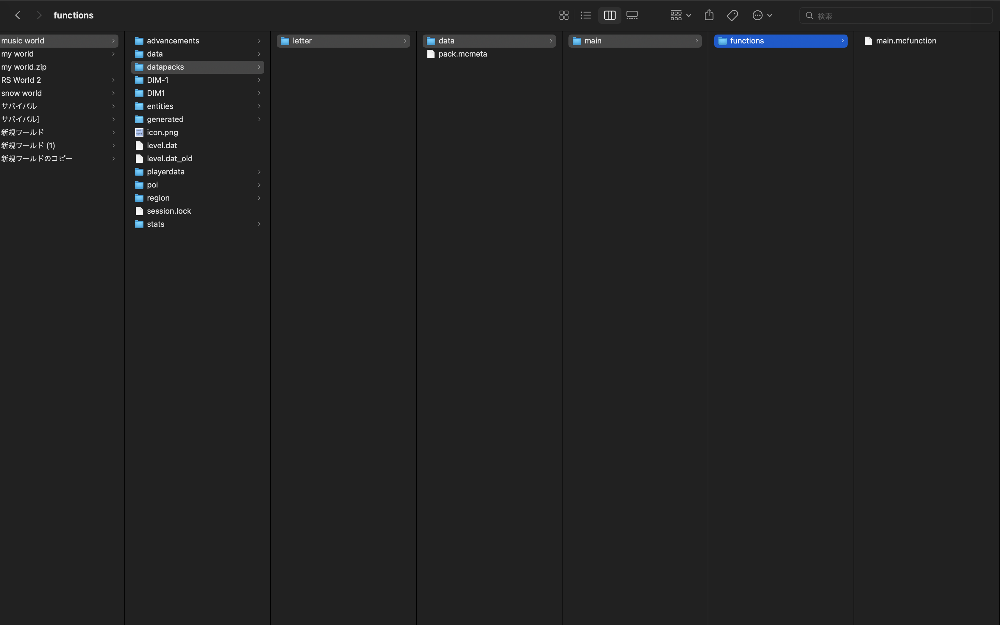

開始点のX座標
開始点のY座標
開始点のZ座標
文字の大きさ
生成したい文字列
Windowsは C:\Users\(ユーザー名)\AppData\Roaming\.minecraft\saves\(ワールド名)
Mac OS Xは /Users/(ユーザー名)/Library/Application Support/minecraft/saves/(ワールド名)
Linuxは /Users/(ユーザー名)/Library/minecraft/saves/(ワールド名)
を開いてください。
(ワールド名は実行したいワールドの名前にしてください)
新規作成したフォルダの名前はなんでもいいです。
まず、作ったフォルダの中にdataという名前のフォルダとpack.mcmetaという名前のファイルを作ります。(pack.mcmetaを作るには、windowsならメモ帳で、macならテキストエディタで適当なファイルを作成し、名前をpack.mcmetaに変更します。)次に、pack.mcmetaを開き、中身を
{"pack": "pack_format": 1,"description": "datapack"}}
にします。
ここまでできていれば下の画像のようになっているはずです
minecraftを起動して、ワールドを開き、/キーを押して、「function main:main」と入力してEnterキーを押してください。すると実行されます。(少し重くなるかもしれません)